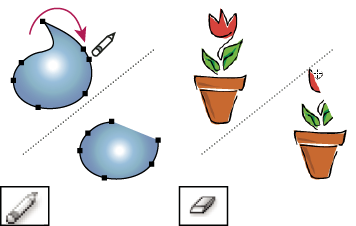

Erase artwork
You can erase portions of your artwork using the Path Eraser tool, the Eraser tool, or the eraser on a Wacom stylus pen. The Path Eraser tool lets you erase parts of a path by drawing along the path. This tool is useful when you want to limit what you erase to a path segment, such as one edge of a triangle. The Eraser tool and the eraser on a Wacom stylus pen let you erase any area of your artwork, regardless of structure. You can use the Eraser tool on paths, compound paths, paths inside Live Paint groups, and clipping paths.

For a video on using the Eraser tool, see www.adobe.com/go/vid0036.
 Erase part of a path using the Path Eraser tool
Erase part of a path using the Path Eraser tool
- Select the object.
- Select the Path Eraser tool .
- Drag the tool along the length of the path segment you want to erase. For best results, use a single, smooth, dragging motion.
Erase objects using the Eraser tool
Erase objects using a Wacom stylus pen eraser
When you flip a stylus pen, the Eraser Tool automatically becomes active. When you flip the stylus pen back over, the last active tool becomes active again.
 Turn over the stylus pen and drag across the area
you want to erase.
Turn over the stylus pen and drag across the area
you want to erase.
Press harder to increase the width of the erased path.
Eraser tool options
You can change the Eraser tool options by double-clicking the tool in the Tools panel.
- Angle
- Determines the angle of rotation for the tool. Drag the arrowhead in the preview, or enter a value in the Angle text box.
- Roundness
- Determines roundness of the tool. Drag a black dot in the preview away from or toward the center, or enter a value in the Roundness text box. The higher the value, the greater the roundness.
- Diameter
-
Determines the diameter of the tool. Use the Diameter slider,
or enter a value in the Diameter text box.
The pop‑up list to the right of each option lets you control variations in the shape of the tool. Select one of the following options:
- Fixed
- Uses a fixed angle, roundness, or diameter.
- Random
- Uses random variations in angle, roundness, or diameter. Enter a value in the Variation text box to specify the range within which the brush characteristic can vary. For example, when the Diameter value is 15 and the Variation value is 5, the diameter can be 10, or 20, or any value in between.
- Pressure
- Varies in angle, roundness, or diameter based on the pressure of a drawing stylus. This option is most useful when used with Diameter. It is available only if you have a graphics tablet. Enter a value in the Variation text box to specify how much more or less the original value the brush characteristic will vary. For example, when the Roundness value is 75% and the Variation value is 25%, the lightest stroke is 50% and the heaviest stroke is 100%. The lighter the pressure, the more angular the brush stroke.
- Stylus Wheel
- Varies in diameter based on manipulation of the stylus wheel.
- Tilt
- Varies in angle, roundness, or diameter based on the tilt of a drawing stylus. This option is most useful when used with Roundness. It is available only if you have a graphics tablet that can detect the direction in which the pen is tilted.
- Bearing
- Varies in angle, roundness, or diameter based on the pressure of a drawing stylus. This option is most useful when used to control the angle of calligraphic brushes, especially when you’re using the brush like a paintbrush. It is available only if you have a graphics tablet that can detect how close to vertical the pen is.
- Rotation
- Varies in angle, roundness, or diameter based on how the drawing stylus pen tip is rotated. This option is most useful when used to control the angle of calligraphic brushes, especially when you’re using the brush like a flat pen. It is available only if you have a graphics tablet that can detect this type of rotation.